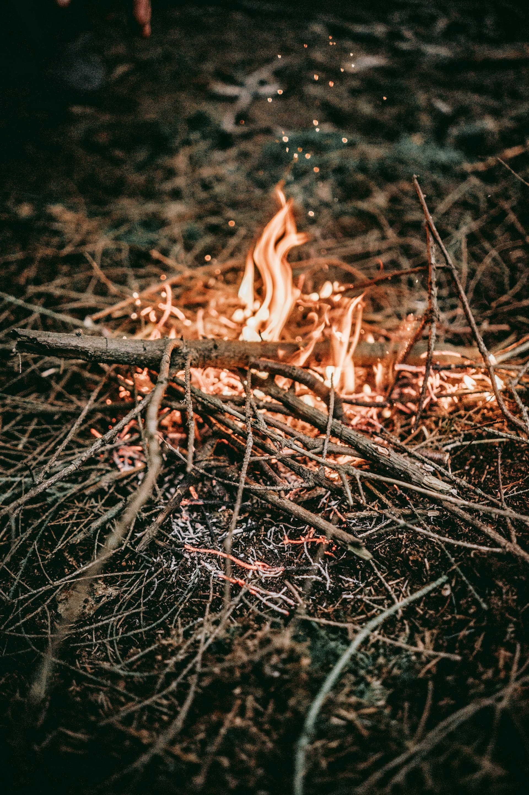
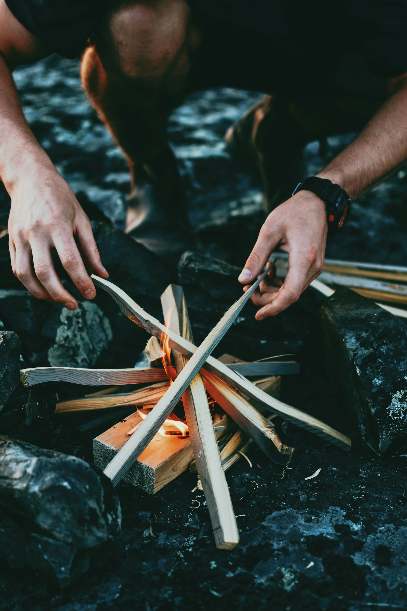
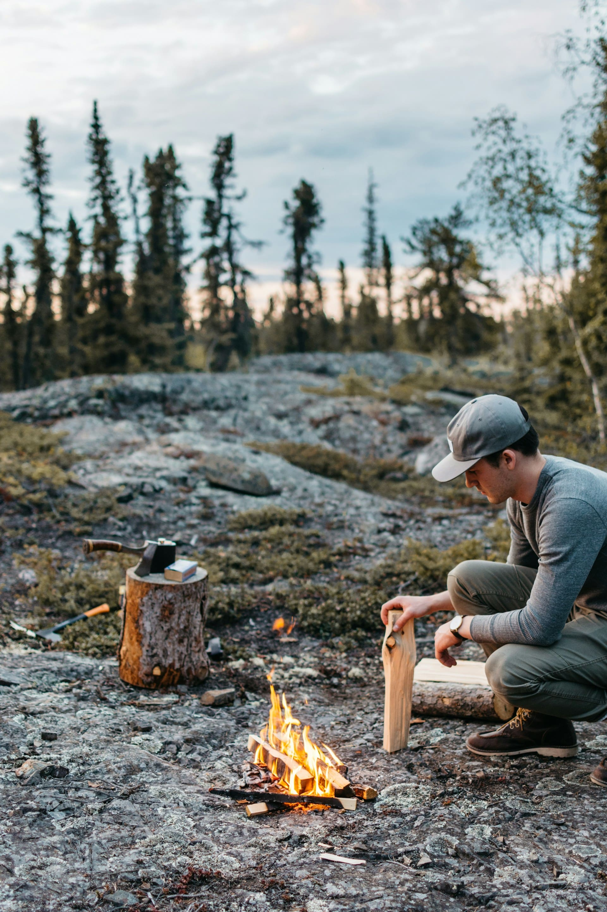

материалы костра 
01Из чего сделать костёр?
- Для разведения костра необходимо три ключевых элемента:
- Топливо: Сухие дрова — лучший выбор. Если дрова сырые или гнилые, от них будет много дыма и мало тепла. Тонкие веточки быстро прогорят, а валежник подойдёт только в сухую погоду. Для быстрого розжига используйте сухую кору, бересту, камыш, папоротник, мох, лишайник и другие лёгкие растопочные материалы. Хорошо горят сухие сучки, птичий пух и высушенные гнилушки.
- Окислитель: Разжигайте костёр с подветренной стороны и раздувайте его, например, большим куском коры.
- Высокая температура: Спички, огниво, лупа.

разведение костра
02Как развести костёр?
- Разжечь костёр: Мох обладает антисептическими свойствами и не содержит бактерий. Можно отжать мох, чтобы получить воду. Она будет коричневатого цвета из-за пигментации мха, но это безопасно.
- Типы костров:
- Костёр "Шалаш": быстро прогорает и имеет высокую температуру горения. Чтобы сделать, необходимо на растопку класть наклонно дрова в виде шалаша.
- Костёр "Звёздный": долго горит, хорош для приготовления пищи и обогрева (ночью в том числек). Экономит дрова — важный фактор при их нехватке. Чтобы сделать брёвна складываются краями в форме звезды и поджигаются в центре.
- Совет: Обложите костёр камнями, чтобы они не только защищали растения от огня, но и сохраняли тепло.
- Разведение костра в дождь: Натяните тент над костровым местом, чтобы защитить его от дождя. В дождливую погоду лучше использовать сосновые ветки с смолой, которая помогает поддерживать пламя, сухую бересту и мёртвые деревья с горючим трутом внутри.

безопасность костра
03Как безопасно развести костёр?
- Безопасность при разведении костра: Разводите костёр далеко от горючих материалов и палаток (более 3 метров). Лучше делать костёр на каменной или песчаной площадке. Убедитесь в доступе воздуха к костру, чтобы огонь горел правильно.
- Тушение костра: Перед уходом из лагеря обязательно потушите костёр: залейте его водой или засыпьте землёй, чтобы избежать риска возгорания.
